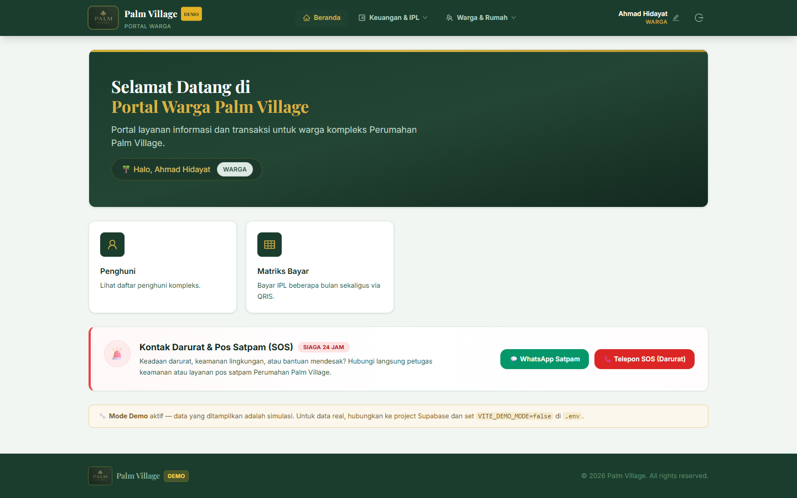
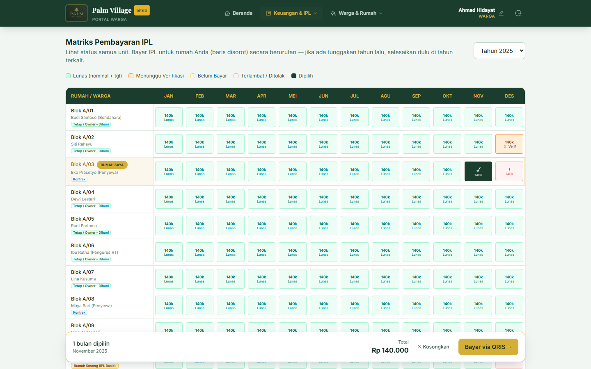
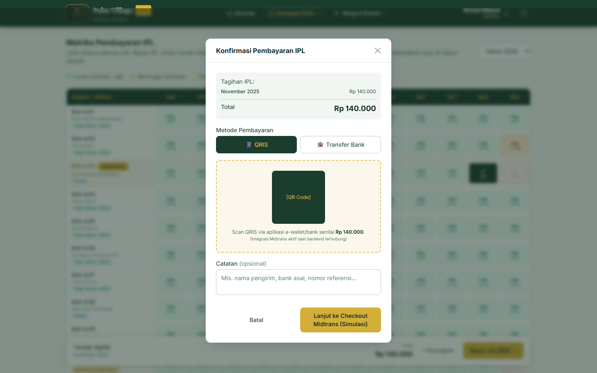
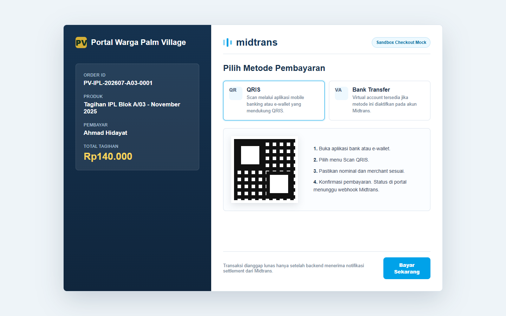
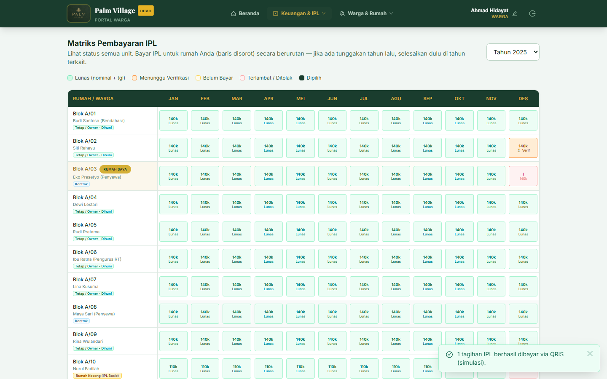

Dokumen Flow Transaksi Pembayaran IPL dengan Midtrans
Tujuan Dokumen
Dokumen ini menjelaskan alur transaksi pembayaran IPL dari tahap pemesanan/tagihan di Portal Warga Palm Village sampai proses checkout pembayaran melalui Midtrans.
Dokumen ini disiapkan sebagai lampiran data tambahan onboarding Midtrans. Surat penunjukan PIC merchant disiapkan sebagai dokumen terpisah.
Ringkasan Alur
- Warga login ke Portal Warga Palm Village.
- Warga membuka menu
Keuangan & IPLlalu memilihMatriks Pembayaran IPL. - Sistem menampilkan daftar tagihan IPL per unit dan periode.
- Warga memilih tagihan yang akan dibayar.
- Sistem menampilkan ringkasan tagihan dan total pembayaran.
- Warga memilih metode pembayaran
QRIS. - Sistem membuat transaksi pembayaran dan mengarahkan warga ke checkout Midtrans.
- Warga menyelesaikan pembayaran di halaman checkout Midtrans.
- Midtrans mengirim notifikasi/webhook ke backend.
- Backend memverifikasi notifikasi Midtrans, lalu memperbarui status pembayaran menjadi
Lunas.
Catatan Implementasi
Saat dokumen ini dibuat, UI demo Portal Warga Palm Village sudah memiliki alur pemilihan tagihan dan konfirmasi pembayaran QRIS. Screenshot checkout Midtrans menggunakan tampilan sandbox/mock untuk menggambarkan target checkout sampai integrasi Midtrans production tersambung ke backend.
Data Contoh Transaksi
| Field | Nilai contoh |
|---|---|
| Merchant | Portal Warga Palm Village |
| Pengguna | Ahmad Hidayat |
| Unit | Blok A/03 |
| Produk/tagihan | Tagihan IPL November 2025 |
| Metode | QRIS via Midtrans |
| Nominal | Rp140.000 |
| Contoh order ID | PV-IPL-202607-A03-0001 |
Step-by-Step Flow dengan Screenshot
1. Warga membuka dashboard portal
Setelah login, warga masuk ke dashboard Portal Warga Palm Village. Dari dashboard, warga dapat mengakses menu Keuangan & IPL.

2. Warga memilih tagihan IPL
Pada halaman Matriks Pembayaran IPL, sistem menampilkan status tagihan per bulan. Warga memilih tagihan yang masih belum dibayar untuk unitnya sendiri.

3. Sistem menampilkan konfirmasi pembayaran
Setelah tagihan dipilih, sistem menampilkan ringkasan transaksi berisi periode tagihan, total nominal, dan pilihan metode pembayaran. Warga memilih QRIS, lalu melanjutkan ke checkout Midtrans.

4. Warga menyelesaikan pembayaran di checkout Midtrans
Backend membuat transaksi Midtrans dengan order_id unik, nominal transaksi, detail customer, dan item tagihan. Setelah token/checkout URL diterima, warga diarahkan ke checkout Midtrans untuk menyelesaikan pembayaran QRIS.

5. Status tagihan diperbarui menjadi lunas
Setelah pembayaran berhasil, Midtrans mengirim notifikasi/webhook ke backend. Backend memverifikasi signature dan status transaksi, lalu memperbarui status payment dan tagihan di database. Portal kemudian menampilkan tagihan sebagai Lunas.

Kontrol Keamanan dan Validasi
order_iddibuat unik untuk setiap transaksi.- Frontend tidak menyimpan Midtrans Server Key.
- Payment hanya dibuat melalui backend yang memvalidasi JWT dan kepemilikan unit.
- Status
Lunastidak dipercaya dari frontend atau return page saja. - Status
Lunashanya ditetapkan setelah webhook Midtrans diverifikasi backend. - Webhook Midtrans diproses secara idempotent agar notifikasi ganda tidak menggandakan pembayaran.
- Semua aksi penting dicatat pada audit log.
Endpoint Production yang Direncanakan
| Endpoint | Fungsi |
|---|---|
POST /portal-v1/payments/qris/create | Membuat transaksi QRIS Midtrans untuk tagihan IPL. |
POST /portal-v1/payments/midtrans/webhook | Menerima dan memverifikasi notifikasi pembayaran Midtrans. |
GET/POST /portal-v1/bills/list | Mengambil daftar tagihan dan status pembayaran terbaru. |